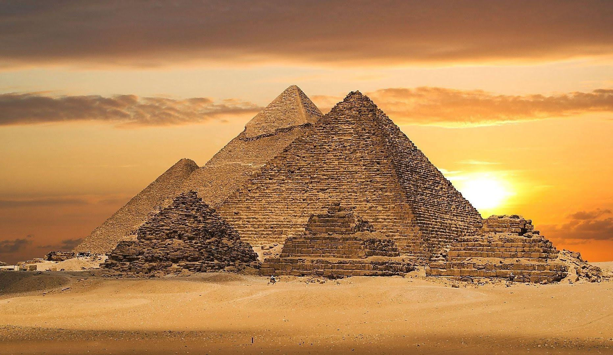
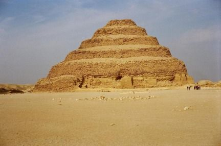
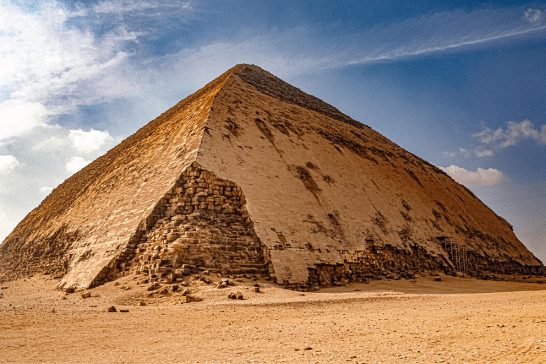

PYRAMIDS

GIZA Pyramids
The pyramids of Giza and the Great Sphinx are among the most popular tourist destinations in the world, and indeed already were even in Roman times. Each of these spectacular structures served as the final resting place of a king of the 4th Dynasty (c.2613–2494 BC). The Great Pyramid of Giza was built for king Khufu (c.2589–2566 BC), and the other two for Khafre and Menkaure, his son and grandson. Khufu’s pyramid is the oldest and largest of the three, and the first building to exceed it in height would not be built for another 3,800 years.
Step Pyramid of Djoser
The Pyramid of Djoser,sometimes called the Step Pyramid of Djoser or Step Pyramid of Horus Netjerikhet, is an archaeological site in the Saqqara necropolis, Egypt, northwest of the ruins of Memphis.It was the first Egyptian pyramid to be built. The six-tier, four-sided structure is the earliest colossal stone building in Egypt.It was built in the 27th century BC during the Third Dynasty for the burial of Pharaoh Djoser. The pyramid is the central feature of a vast mortuary complex in an enormous courtyard surrounded by ceremonial structures and decoration.


The Bent Pyramid
The Bent Pyramid is one of the pyramids built by King Sneferu, the first king of the Dynasty 4. It was called “bent” because of its broken lines due to a change of angle, an engineering issue in its design. Indeed, the pyramid construction began at an angle of 55 degrees but had to be adjusted to 43 degrees due to an overload of blocks resulting in instability. Despite their adjustments, the king’s designers made a new pyramid at a short distance, the Red Pyramid. The first angle of the Bent Pyramid suggests the transition phase between the Step-pyramid design of King Djoser in Saqqara and the later smooth-faced pyramids.
Hawara Pyramid
It is one of the pyramids of Egypt, built by Pharaoh Amenemhat III of the 12th Dynasty in the village of Hawara, 9 km southeast of the city of Fayoum. The pyramid contains many corridors and chambers, ending with the burial chamber, which contained a huge stone sarcophagus made from a single piece weighing up to 110 tons. The chamber's door was sealed with a massive stone, closed by dropping sand underneath into two small side rooms. Thieves could not enter the sarcophagus chamber through this door but managed to reach it through an opening in the ceiling, looting it and burning the funerary furniture inside.
.webp)
.webp)
Meidum Pyramid
The Meidum Pyramid is situated approximately 72 kilometers (45 miles) south of modern Cairo, near the edge of the Nile Valley and the Fayum region. It is considered one of the earliest pyramids of the Fourth Dynasty, attributed primarily to Pharaoh Sneferu,originally a step pyramid later converted into a true smooth-sided pyramid, now partially collapsed ,though construction may have begun under Huni, the last ruler of the Third Dynasty. Its unique appearance has earned it the nickname el-heram el-kaddab, or "the false pyramid," in Egyptian Arabic.